CODING AGENTS AS PIXEL WORLD MODELS
traex/GPT-6.1-Sol · 0034
点击播放 · 原生 RGB 像素
逐轮保存的候选
回放视频、检查图与代码变化。
每份候选均可单独播放。实际图片检查记录在下方工具轨迹中。
候选 01播放与检查图
点击播放 · 原生 RGB 像素

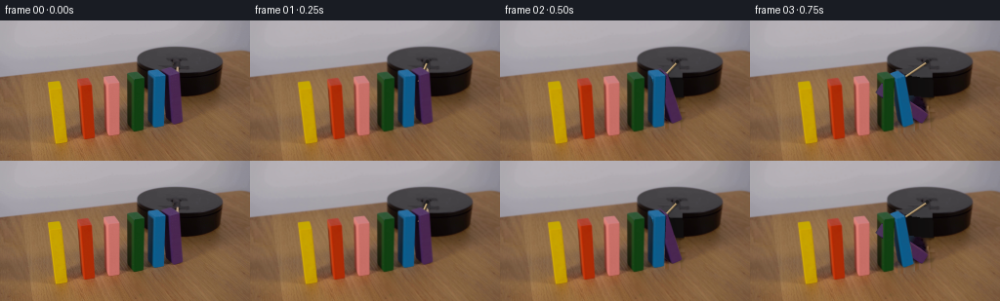
展开代码变化
--- 上一保存版本
+++ 本次保存版本
@@ -0,0 +1,219 @@
+from pathlib import Path
+import math
+import numpy as np
+from PIL import Image, ImageDraw, ImageFilter
+import cv2
+from scipy.ndimage import gaussian_filter
+import artifact_io
+
+ROOT=Path(__file__).resolve().parent
+S=4
+W,H=256,144
+im=np.array(Image.open(ROOT/'first_frame.png').convert('RGB'))
+# Measured corner locations of the six pieces in the original photograph.
+# front lower left, lower right, upper left, upper right, rear upper left, rear upper right
+corners=np.array([
+ [[56,126],[69,124],[52,72],[64,70],[49,64],[61,62]],
+ [[86,122],[97,120],[83,69],[94,67],[79,61],[90,59]],
+ [[112,118],[122,117],[109,66],[122,64],[106,59],[117,57]],
+ [[137,114],[147,112],[136,62],[148,59],[130,55],[140,52]],
+ [[157,110],[168,108],[157,59],[170,57],[151,52],[164,50]],
+ [[176,106],[187,104],[172,57],[184,54],[165,50],[175,48]],
+],float)
+
+
+def poly_mask(pts,scale=S):
+ m=Image.new('L',(W*scale,H*scale)); ImageDraw.Draw(m).polygon([tuple(p*scale) for p in np.asarray(pts)],fill=255)
+ return np.asarray(m,dtype=float)/255
+
+masks=[]
+for q in corners:
+ p=[q[0],q[1],q[3],q[5],q[4],q[2]]
+ a=poly_mask(p,1)
+ a=cv2.dilate(a.astype(np.uint8),np.ones((5,5),np.uint8))
+ masks.append(a)
+mask=np.maximum.reduce(masks)
+# Include the floor-contact shadows in the clean plate.
+for q in corners:
+ cv2.ellipse(mask,(round(q[0,0]+3),round(q[0,1]-3)),(14,8),-12,0,360,1,-1)
+# Classical, nonlearned reconstruction of the small occluded background areas.
+clean=cv2.inpaint(im,(mask*255).astype(np.uint8),5,cv2.INPAINT_TELEA)
+# Restore the occluded part of the stationary cylindrical base analytically.
+y,x=np.mgrid[:H,:W]
+side=((x-184)/43.5)**2+((y-60.7)/17.7)**2<=1
+side &= y>=42
+side |= (abs(x-184)<43.5)&(y>=42)&(y<=61)
+top=((x-184)/43.8)**2+((y-42.7)/15.8)**2<=1
+cyl=side|top
+rebuild=np.zeros_like(im,dtype=float)
+# Subtle curvature shading around a dark matte platform.
+shade=12+5*((x-145)/84)+1.5*np.cos((x-180)/25)
+for k in range(3): rebuild[:,:,k]=shade+(1.5 if k==0 else 0)
+# Match the original top's low contrast, slightly warm charcoal.
+for k,v in enumerate([64,63,66]):rebuild[:,:,k]=np.where(top,v+.015*(x-180)+.035*(42-y),rebuild[:,:,k])
+# Front bevel seam.
+edge=np.abs(((x-184)/43.8)**2+((y-42.7)/15.8)**2-1)<.09
+edge &= y>=43
+rebuild[edge]=rebuild[edge]*.70
+rebuild=np.clip(rebuild,0,255)
+clean=np.where((cyl & (mask>0))[:,:,None],rebuild,clean).astype(np.uint8)
+# Add real wood grain from a clear, nearby part of the same table to the inpainted floor.
+noise=im.astype(float)-gaussian_filter(im.astype(float),(2.0,2.0,0))
+grain=np.roll(noise,40,axis=0)
+use=(mask>0)&(~cyl)
+clean[use]=np.clip(clean[use].astype(float)+grain[use]*.45,0,255)
+Image.fromarray(clean).save(ROOT/'.tmp/clean.png')
+
+# Remove only the small initially exposed rotating arm; leave the fixed mounting plate.
+rodmask=np.zeros((H,W),np.uint8)
+cv2.line(rodmask,(181,45),(181,54),255,3)
+rodmask &= (mask==0).astype(np.uint8)*255
+clean=cv2.inpaint(clean,rodmask,3,cv2.INPAINT_TELEA)
+source_hi=cv2.resize(im,(W*S,H*S),interpolation=cv2.INTER_CUBIC).astype(float)
+clean_hi=cv2.resize(clean,(W*S,H*S),interpolation=cv2.INTER_CUBIC).astype(float)
+
+# Separate the photographed faces. These retain paint and actual surface variations.
+front_src=[];top_src=[];left_src=[]
+for q in corners:
+ B,R,TL,TR,BL,BR=q
+ D=BL-TL
+ front_src.append(np.array([B,R,TR,TL]))
+ top_src.append(np.array([TL,TR,BR,BL]))
+ left_src.append(np.array([B,TL,BL,B+D]))
+
+
+def warp_face(canvas,src,dst,bright=1.0,synthetic=False,idx=0):
+ area=abs(cv2.contourArea(np.asarray(dst,np.float32)))
+ if area<.05:return canvas
+ mat=cv2.getPerspectiveTransform((np.asarray(src)*S).astype(np.float32),(np.asarray(dst)*S).astype(np.float32))
+ tex=cv2.warpPerspective(source_hi,mat,(W*S,H*S),flags=cv2.INTER_LINEAR,borderMode=cv2.BORDER_REFLECT)
+ if synthetic:
+ # The newly revealed side shares the wooden paint of the photographed front.
+ tex=tex*bright
+ else:tex=tex*bright
+ a=poly_mask(dst)[:,:,None]
+ return canvas*(1-a)+np.clip(tex,0,255)*a
+
+
+def verts(idx,angle):
+ B,R,TL,TR,BL,BR=corners[idx]
+ # Per-object calibrated perspective basis; each block has the same physical dimensions.
+ eX=(R-B)/.17
+ eZ=((TL-B)+(TR-R))*.5/.76
+ eY=((BL-TL)+(BR-TR))*.5/.17
+ co,si=np.cos(angle),np.sin(angle)
+ result={}
+ world={}
+ for xi in [0,1]:
+ for yi in [0,1]:
+ for zi in [0,1]:
+ x=xi*.17;z=zi*.76;y=yi*.17
+ xx=x*co-z*si;zz=x*si+z*co
+ result[xi,yi,zi]=B+xx*eX+y*eY+zz*eZ
+ world[xi,yi,zi]=np.array([xx,y,zz])
+ return result,world
+
+
+def block(canvas,i,a):
+ p,w=verts(i,a)
+ co,si=np.cos(a),np.sin(a)
+ faces=[]
+ # Visible broad front plane, textured straight from the photograph.
+ faces.append(([p[0,0,0],p[1,0,0],p[1,0,1],p[0,0,1]],front_src[i],1.0))
+ # The upper end is visible even as it turns into the leading end of the fallen block.
+ faces.append(([p[0,0,1],p[1,0,1],p[1,1,1],p[0,1,1]],top_src[i],1-.16*si))
+ if .14*co-.60*si>0:
+ faces.append(([p[0,0,0],p[0,0,1],p[0,1,1],p[0,1,0]],left_src[i],1+.08*si))
+ else:
+ # As a block tips over, the opposite long painted side becomes its top surface.
+ dest=[p[1,0,0],p[1,0,1],p[1,1,1],p[1,1,0]]
+ # Rotate the source front's grain so it follows the long axis of the wood.
+ B,R,TL,TR,BL,BR=corners[i]
+ src=np.array([R,TR,TL,B])
+ faces.append((dest,src,1.12+.11*si))
+ # Draw the front last: its outward-facing boundary is closest to the camera.
+ for dst,src,b in faces[1:]+faces[:1]:canvas=warp_face(canvas,src,dst,b)
+ return canvas
+
+
+def cast_shadow(canvas,i,a):
+ p,_=verts(i,a)
+ # A soft contact shadow follows the base and the lowering end of each wooden piece.
+ B=corners[i,0];end=p[0,0,1]
+ z=.76*np.cos(a)
+ base=np.array([B,corners[i,1],corners[i,1]+[3,-5],B+[3,-5]])
+ reach=end+np.array([6*z,-3*z])
+ path=np.array([B+[1,-1],reach,reach+[11,-3],B+[12,-3]])
+ m=poly_mask(path)
+ m=gaussian_filter(m,sigma=(1.7+3*z)*S)
+ canvas=canvas*(1-m[:,:,None]*(.19-.06*z))
+ contact=poly_mask(base)
+ contact=gaussian_filter(contact,sigma=.7*S)
+ return canvas*(1-contact[:,:,None]*.17)
+
+
+def rod(canvas,t):
+ # Clockwise rotation in the horizontal plane (the y-axis is foreshortened).
+ theta=np.deg2rad(90+43*t)
+ pivot=np.array([181.5,42.4]); end=pivot+np.array([48*np.cos(theta),20.4*np.sin(theta)])
+ u=end-pivot;n=np.array([-u[1],u[0]]);n=n/np.linalg.norm(n)
+ # Shadow and narrow side of a thin, unpainted wooden arm.
+ sh=poly_mask([pivot+[0,1.6]-n*.85,end+[0,1.6]-n*.85,end+[0,1.6]+n*.85,pivot+[0,1.6]+n*.85])
+ sh=gaussian_filter(sh,.75*S)
+ canvas*=1-.32*sh[:,:,None]
+ for shift,half,col in [(np.array([0,.55]),.85,[116,92,60]),(np.array([0,0]),.66,[180,151,108]),(np.array([0,-.18]),.32,[202,178,133])]:
+ m=poly_mask([pivot+shift-n*half,end+shift-n*half,end+shift+n*half,pivot+shift+n*half])[:,:,None]
+ canvas=canvas*(1-m)+np.array(col)*m
+ # A small fixed screw masks the inner end of the rotating stick.
+ m=Image.new('L',(W*S,H*S));d=ImageDraw.Draw(m);d.ellipse((179.6*S,40.3*S,183.3*S,44.0*S),fill=255)
+ a=np.array(m)[:,:,None]/255
+ canvas=canvas*(1-a)+np.array([29,28,29])*a
+ return canvas
+
+
+def angle_for(i,t):
+ onset=[1.47,1.24,1.02,.79,.57,.30][i]
+ duration=[.65,.68,.67,.64,.63,.64][i]
+ u=max(0,(t-onset)/duration)
+ # Initially accelerating under gravity; subsequent collision leaves a tiny settling bounce.
+ if u<1: a=(np.pi/2-.035)*(u**1.65)
+ else:
+ a=np.pi/2-.035-0.052*np.exp(-5*(u-1))*np.sin(10*(u-1))
+ # Fallen neighbours rest on each other rather than pass through one another.
+ final=[np.pi/2,np.deg2rad(77.0),np.deg2rad(76.5),np.deg2rad(76),np.deg2rad(75.5),np.deg2rad(75.5)][i]
+ return min(a,final)
+
+
+def frame(t):
+ angles=[angle_for(i,t) for i in range(6)]
+ # Only reconstruct the regions vacated in this frame, preserving the photographic setup.
+ remove=np.zeros((H,W),float)
+ for i,a in enumerate(angles):
+ if a>0:
+ m=masks[i].copy()
+ q=corners[i]
+ cv2.ellipse(m,(round(q[0,0]+3),round(q[0,1]-3)),(14,8),-12,0,360,1,-1)
+ remove=np.maximum(remove,m)
+ remove=np.maximum(remove,rodmask/255)
+ rm=cv2.resize(remove,(W*S,H*S),interpolation=cv2.INTER_LINEAR)[:,:,None]
+ canvas=source_hi*(1-rm)+clean_hi*rm
+ canvas=rod(canvas,t)
+ for i,a in enumerate(angles):
+ if a>0:canvas=cast_shadow(canvas,i,a)
+ # The left-most pieces are in front of their neighbours after the domino wave.
+ for i in range(5,-1,-1):
+ if angles[i]>0:
+ canvas=block(canvas,i,angles[i])
+ else:
+ q=corners[i];p=[q[0],q[1],q[3],q[5],q[4],q[2]]
+ a=poly_mask(p)[:,:,None]
+ canvas=canvas*(1-a)+source_hi*a
+ return np.clip(cv2.resize(canvas,(W,H),interpolation=cv2.INTER_AREA),0,255).astype(np.uint8)
+
+
+def main():
+ frames=[im.copy()]
+ for j in range(1,20):frames.append(frame(j/4))
+ artifact_io.save(np.stack(frames),ROOT)
+
+if __name__=='__main__':main()
候选 02播放与检查图
点击播放 · 原生 RGB 像素

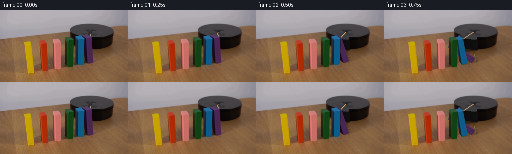
展开代码变化
--- 上一保存版本
+++ 本次保存版本
@@ -28,7 +28,7 @@
masks=[]
for q in corners:
- p=[q[0],q[1],q[3],q[5],q[4],q[2]]
+ p=[q[0],q[1],q[3],q[5],q[4],q[0]+q[4]-q[2]]
a=poly_mask(p,1)
a=cv2.dilate(a.astype(np.uint8),np.ones((5,5),np.uint8))
masks.append(a)
@@ -205,7 +205,7 @@
if angles[i]>0:
canvas=block(canvas,i,angles[i])
else:
- q=corners[i];p=[q[0],q[1],q[3],q[5],q[4],q[2]]
+ q=corners[i];p=[q[0],q[1],q[3],q[5],q[4],q[0]+q[4]-q[2]]
a=poly_mask(p)[:,:,None]
canvas=canvas*(1-a)+source_hi*a
return np.clip(cv2.resize(canvas,(W,H),interpolation=cv2.INTER_AREA),0,255).astype(np.uint8)
候选 03播放与检查图
点击播放 · 原生 RGB 像素
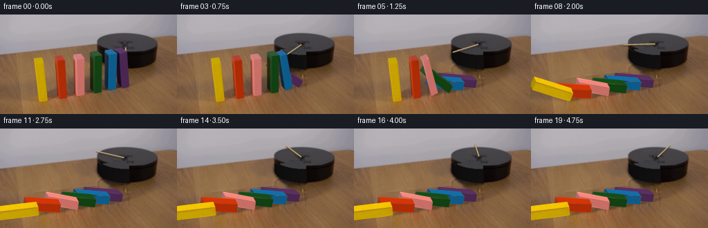
展开代码变化
--- 上一保存版本 +++ 本次保存版本 @@ -57,11 +57,25 @@ rebuild[edge]=rebuild[edge]*.70 rebuild=np.clip(rebuild,0,255) clean=np.where((cyl & (mask>0))[:,:,None],rebuild,clean).astype(np.uint8) -# Add real wood grain from a clear, nearby part of the same table to the inpainted floor. +# Reconstruct the table with its original wood texture, without translating +# the painted pieces or their colored edges into the clean plate. noise=im.astype(float)-gaussian_filter(im.astype(float),(2.0,2.0,0)) -grain=np.roll(noise,40,axis=0) use=(mask>0)&(~cyl) -clean[use]=np.clip(clean[use].astype(float)+grain[use]*.45,0,255) +# Smooth illumination field fitted only to unobstructed table pixels. +Y,X=np.mgrid[:H,:W] +terms=np.stack([np.ones_like(X),X/256,Y/144,(X/256)**2,(Y/144)**2,X*Y/(256*144)],axis=-1) +valid=(Y>60)&(mask==0)&(~cyl)&(X>10) +# Avoid the remaining long cast shadows around the row. +valid &= ((X>195)|(Y>130)|(X<34)) +coef=np.linalg.lstsq(terms[valid],im.astype(float)[valid],rcond=None)[0] +field=terms@coef +# Same-source fine grain from a clear strip, periodic only in the hidden regions. +sx=200+((X+((Y//12)%3)*7)%50) +sy=82+(Y%57) +fine=noise[sy,sx] +# Keep some of the softer original floor shading rather than flattening the photograph. +newfloor=.85*field+.15*clean.astype(float)+fine*.7 +clean[use]=np.clip(newfloor[use],0,255) Image.fromarray(clean).save(ROOT/'.tmp/clean.png') # Remove only the small initially exposed rotating arm; leave the fixed mounting plate.
候选 04播放与检查图

候选 05播放与检查图
点击播放 · 原生 RGB 像素
展开代码变化
--- 上一保存版本
+++ 本次保存版本
@@ -47,8 +47,8 @@
cyl=side|top
rebuild=np.zeros_like(im,dtype=float)
# Subtle curvature shading around a dark matte platform.
-shade=12+5*((x-145)/84)+1.5*np.cos((x-180)/25)
-for k in range(3): rebuild[:,:,k]=shade+(1.5 if k==0 else 0)
+shade=11+7*np.exp(-((x-205)/15)**2)
+for k,offset in enumerate([1,-4,-5]): rebuild[:,:,k]=shade+offset
# Match the original top's low contrast, slightly warm charcoal.
for k,v in enumerate([64,63,66]):rebuild[:,:,k]=np.where(top,v+.015*(x-180)+.035*(42-y),rebuild[:,:,k])
# Front bevel seam.
@@ -64,9 +64,9 @@
# Smooth illumination field fitted only to unobstructed table pixels.
Y,X=np.mgrid[:H,:W]
terms=np.stack([np.ones_like(X),X/256,Y/144,(X/256)**2,(Y/144)**2,X*Y/(256*144)],axis=-1)
-valid=(Y>60)&(mask==0)&(~cyl)&(X>10)
-# Avoid the remaining long cast shadows around the row.
-valid &= ((X>195)|(Y>130)|(X<34))
+valid=(Y>60)&(mask==0)&(~cyl)&(X>8)
+# Fit to lit wood, not to the dark shadow between the uprights.
+valid &= (((Y<87)&(X<128))|(Y>128)|(X>235)|(X<38))
coef=np.linalg.lstsq(terms[valid],im.astype(float)[valid],rcond=None)[0]
field=terms@coef
# Same-source fine grain from a clear strip, periodic only in the hidden regions.
@@ -74,8 +74,18 @@
sy=82+(Y%57)
fine=noise[sy,sx]
# Keep some of the softer original floor shading rather than flattening the photograph.
-newfloor=.85*field+.15*clean.astype(float)+fine*.7
+newfloor=field+fine*.65
clean[use]=np.clip(newfloor[use],0,255)
+# Feather the reconstructed table outside the vacated outlines and erase old
+# cast shadows. The thin core remains fully replaced.
+floor_region=np.zeros((H,W),np.uint8)
+cv2.ellipse(floor_region,(112,111),(80,16),-10,0,360,1,-1)
+floor_core=np.maximum(mask,floor_region).astype(float)
+floor_mix=np.maximum(floor_core,gaussian_filter(floor_core,3.0))
+floor_mix[cyl]=0
+# In the surrounding feather use the source itself, never reconstructed paint.
+clean=np.clip(im*(1-floor_mix[:,:,None])+newfloor*floor_mix[:,:,None],0,255).astype(np.uint8)
+clean[cyl & (mask>0)]=rebuild[cyl & (mask>0)]
Image.fromarray(clean).save(ROOT/'.tmp/clean.png')
# Remove only the small initially exposed rotating arm; leave the fixed mounting plate.
@@ -207,7 +217,9 @@
m=masks[i].copy()
q=corners[i]
cv2.ellipse(m,(round(q[0,0]+3),round(q[0,1]-3)),(14,8),-12,0,360,1,-1)
- remove=np.maximum(remove,m)
+ mf=m.astype(float)
+ mf=np.maximum(mf,gaussian_filter(mf,3.0))
+ remove=np.maximum(remove,mf)
remove=np.maximum(remove,rodmask/255)
rm=cv2.resize(remove,(W*S,H*S),interpolation=cv2.INTER_LINEAR)[:,:,None]
canvas=source_hi*(1-rm)+clean_hi*rm
候选 06播放与检查图

候选 07播放与检查图
点击播放 · 原生 RGB 像素

展开代码变化
--- 上一保存版本
+++ 本次保存版本
@@ -3,7 +3,7 @@
import numpy as np
from PIL import Image, ImageDraw, ImageFilter
import cv2
-from scipy.ndimage import gaussian_filter
+from scipy.ndimage import gaussian_filter, distance_transform_edt
import artifact_io
ROOT=Path(__file__).resolve().parent
@@ -43,7 +43,7 @@
side=((x-184)/43.5)**2+((y-60.7)/17.7)**2<=1
side &= y>=42
side |= (abs(x-184)<43.5)&(y>=42)&(y<=61)
-top=((x-184)/43.8)**2+((y-42.7)/15.8)**2<=1
+top=((x-184)/43.8)**2+((y-41.3)/14.3)**2<=1
cyl=side|top
rebuild=np.zeros_like(im,dtype=float)
# Subtle curvature shading around a dark matte platform.
@@ -52,7 +52,7 @@
# Match the original top's low contrast, slightly warm charcoal.
for k,v in enumerate([64,63,66]):rebuild[:,:,k]=np.where(top,v+.015*(x-180)+.035*(42-y),rebuild[:,:,k])
# Front bevel seam.
-edge=np.abs(((x-184)/43.8)**2+((y-42.7)/15.8)**2-1)<.09
+edge=np.abs(((x-184)/43.8)**2+((y-41.3)/14.3)**2-1)<.09
edge &= y>=43
rebuild[edge]=rebuild[edge]*.70
rebuild=np.clip(rebuild,0,255)
@@ -69,23 +69,41 @@
valid &= (((Y<87)&(X<128))|(Y>128)|(X>235)|(X<38))
coef=np.linalg.lstsq(terms[valid],im.astype(float)[valid],rcond=None)[0]
field=terms@coef
-# Same-source fine grain from a clear strip, periodic only in the hidden regions.
-sx=200+((X+((Y//12)%3)*7)%50)
-sy=82+(Y%57)
-fine=noise[sy,sx]
-# Keep some of the softer original floor shading rather than flattening the photograph.
-newfloor=field+fine*.65
-clean[use]=np.clip(newfloor[use],0,255)
-# Feather the reconstructed table outside the vacated outlines and erase old
-# cast shadows. The thin core remains fully replaced.
+# Photographed wood grain from the unobstructed left strip. Only its
+# illumination is removed, so real knots and fibers survive in the new floor.
+sx=8+((X+((Y//30)%2)*5)%31)
+sy=np.clip(Y,62,140)
+wood=im.astype(float)-gaussian_filter(im.astype(float),(9,9,0))
+fine=wood[sy,sx]
+newfloor=field+fine*.83
floor_region=np.zeros((H,W),np.uint8)
cv2.ellipse(floor_region,(112,111),(80,16),-10,0,360,1,-1)
floor_core=np.maximum(mask,floor_region).astype(float)
-floor_mix=np.maximum(floor_core,gaussian_filter(floor_core,3.0))
+# A continuous six-pixel falloff outside the removal region avoids polygon edges.
+dist=distance_transform_edt(floor_core==0)
+floor_mix=np.clip(1-dist/7,0,1)
+floor_mix=floor_mix*floor_mix*(3-2*floor_mix)
floor_mix[cyl]=0
-# In the surrounding feather use the source itself, never reconstructed paint.
clean=np.clip(im*(1-floor_mix[:,:,None])+newfloor*floor_mix[:,:,None],0,255).astype(np.uint8)
-clean[cyl & (mask>0)]=rebuild[cyl & (mask>0)]
+# The cylinder side is recoverable from its unobstructed opposite half.
+mirrorx=np.clip(368-X,0,W-1)
+side_tex=im[Y,mirrorx].astype(float)
+side_tex[:,:,0]-=np.maximum(0,(184-X)/43)*2
+side_tex[:,:,1]-=np.maximum(0,(184-X)/43)*2
+side_tex[:,:,2]-=np.maximum(0,(184-X)/43)*1
+side_region=cyl & (~top) & (X<185)
+clean[side_region]=np.clip(side_tex[side_region],0,255)
+# Match the visible top locally by texture continuation rather than a flat face.
+top_region=top & (mask>0)
+top_tex=gaussian_filter(im.astype(float),(1.4,1.4,0))
+# Use a clear patch behind the row at the same horizontal positions.
+for yy,xx in zip(*np.where(top_region)):
+ sample=im[max(31,min(44,yy-12)),xx].astype(float)
+ # Set only the missing front portion of the matte gray disc.
+ clean[yy,xx]=np.clip(.7*sample+.3*np.array([64,63,66]),0,255)
+# A narrow black bevel follows the elliptic front edge.
+bevel=(np.abs(((X-184)/43.8)**2+((Y-41.3)/14.3)**2-1)<.085)&(Y>41)&(mask>0)
+clean[bevel]=np.clip(clean[bevel].astype(float)*.70,0,255)
Image.fromarray(clean).save(ROOT/'.tmp/clean.png')
# Remove only the small initially exposed rotating arm; leave the fixed mounting plate.
@@ -218,7 +236,9 @@
q=corners[i]
cv2.ellipse(m,(round(q[0,0]+3),round(q[0,1]-3)),(14,8),-12,0,360,1,-1)
mf=m.astype(float)
- mf=np.maximum(mf,gaussian_filter(mf,3.0))
+ dd=distance_transform_edt(mf==0)
+ mf=np.clip(1-dd/7,0,1)
+ mf=mf*mf*(3-2*mf)
remove=np.maximum(remove,mf)
remove=np.maximum(remove,rodmask/255)
rm=cv2.resize(remove,(W*S,H*S),interpolation=cv2.INTER_LINEAR)[:,:,None]
候选 08播放与检查图
点击播放 · 原生 RGB 像素
展开代码变化
--- 上一保存版本 +++ 本次保存版本 @@ -86,12 +86,12 @@ floor_mix[cyl]=0 clean=np.clip(im*(1-floor_mix[:,:,None])+newfloor*floor_mix[:,:,None],0,255).astype(np.uint8) # The cylinder side is recoverable from its unobstructed opposite half. -mirrorx=np.clip(368-X,0,W-1) +mirrorx=np.clip(np.maximum(368-X,194),0,W-1) side_tex=im[Y,mirrorx].astype(float) side_tex[:,:,0]-=np.maximum(0,(184-X)/43)*2 side_tex[:,:,1]-=np.maximum(0,(184-X)/43)*2 side_tex[:,:,2]-=np.maximum(0,(184-X)/43)*1 -side_region=cyl & (~top) & (X<185) +side_region=cyl & (~top) & (X<190) clean[side_region]=np.clip(side_tex[side_region],0,255) # Match the visible top locally by texture continuation rather than a flat face. top_region=top & (mask>0)
候选 09播放与检查图
可观测工具轨迹
实际执行的命令与返回图片。
命令 1exit 0
/bin/bash -lc 'ls -la && cat prompt.txt && cat GENERATION_RULES.md'
命令 2exit 0
/bin/bash -lc "cat artifact_io.py && python - <<'PY'
from PIL import Image
im=Image.open('first_frame.png');print(im.size);im.resize((1024,576)).save('.tmp/enlarge.png')
PY"命令 3exit 0
/bin/bash -lc "python - <<'PY'
from PIL import Image
im=Image.open('first_frame.png');im.resize((1536,864),Image.Resampling.NEAREST).save('.tmp/nearest.png')
PY"命令 4exit 0
/bin/bash -lc "python - <<'PY' import importlib.util for a in ['numpy','cv2','scipy','PIL']: print(a,importlib.util.find_spec(a)) PY"
命令 5exit 0
/bin/bash -lc "python - <<'PY'
from PIL import Image
im=Image.open('first_frame.png');im.crop((150,30,201,66)).resize((816,576)).save('.tmp/rod.png')
PY"命令 6exit 0
/bin/bash -lc "cat > .tmp/fit.py <<'PY'
import numpy as np
from scipy.optimize import least_squares
coords=[[[56,126],[69,124],[52,72],[64,70],[49,64],[60,62]],[[86,122],[97,120],[82,69],[94,67],[79,61],[90,59]],[[111,118],[122,117],[108,66],[122,64],[106,59],[117,57]],[[138,114],[147,112],[134,62],[148,59],[130,55],[140,52]],[[157,109],[168,108],[156,59],[170,57],[151,52],[164,50]],[[176,106],[187,104],[173,57],[183,54],[165,50],[175,48]]]
obj=[];obs=[]
for i,ps in enumerate(coords):
for v,p in zip([[0,0,0],[12,0,0],[0,0,65],[12,0,65],[0,13,65],[12,13,65]],ps):
obj.append([v[0]+29*i,v[1],v[2],1]);obs.append(p)
obj=np.array(obj);obs=np.array(obs)
def proj(a):
P=np.r_[a,1].reshape(3,4);q=obj@P.T;return q[:,:2]/q[:,2:]
x0=np.array([1,-.5,-.04,56,-.16,-.5,-.85,126,.001,0,0.0001])
f=least_squares(lambda a:(proj(a)-obs).ravel(),x0,max_nfev=4000)
P=np.r_[f.x,1].reshape(3,4); print(P);print('err',np.sqrt(np.mean((proj(f.x)-obs)**2)));print(proj(f.x).reshape(6,6,2));np.save('.tmp/P.npy',P)
PY
python .tmp/fit.py"命令 7exit 0
/bin/bash -lc "python - <<'PY'
from PIL import Image
im=Image.open('first_frame.png');im.crop((120,20,240,120)).resize((960,800)).save('.tmp/platform.png')
PY"命令 8exit 0
/bin/bash -lc "cat > generate.py <<'PY'
from pathlib import Path
import math
import numpy as np
from PIL import Image, ImageDraw, ImageFilter
import cv2
from scipy.ndimage import gaussian_filter
import artifact_io
ROOT=Path(__file__).resolve().parent
S=4
W,H=256,144
im=np.array(Image.open(ROOT/'first_frame.png').convert('RGB'))
# Measured corner locations of the six pieces in the original photograph.
# front lower left, lower right, upper left, upper right, rear upper left, rear upper right
corners=np.array([
[[56,126],[69,124],[52,72],[64,70],[49,64],[61,62]],
[[86,122],[97,120],[83,69],[94,67],[79,61],[90,59]],
[[112,118],[122,117],[109,66],[122,64],[106,59],[117,57]],
[[137,114],[147,112],[136,62],[148,59],[130,55],[140,52]],
[[157,110],[168,108],[157,59],[170,57],[151,52],[164,50]],
[[176,106],[187,104],[172,57],[184,54],[165,50],[175,48]],
],float)
def poly_mask(pts,scale=S):
m=Image.new('L',(W*scale,H*scale)); ImageDraw.Draw(m).polygon([tuple(p*scale) for p in np.asarray(pts)],fill=255)
return np.asarray(m,dtype=float)/255
masks=[]
for q in corners:
p=[q[0],q[1],q[3],q[5],q[4],q[2]]
a=poly_mask(p,1)
a=cv2.dilate(a.astype(np.uint8),np.ones((5,5),np.uint8))
masks.append(a)
mask=np.maximum.reduce(masks)
# Include the floor-contact shadows in the clean plate.
for q in corners:
cv2.ellipse(mask,(round(q[0,0]+3),round(q[0,1]-3)),(14,8),-12,0,360,1,-1)
# Classical, nonlearned reconstruction of the small occluded background areas.
clean=cv2.inpaint(im,(mask*255).astype(np.uint8),5,cv2.INPAINT_TELEA)
# Restore the occluded part of the stationary cylindrical base analytically.
y,x=np.mgrid[:H,:W]
side=((x-184)/43.5)**2+((y-60.7)/17.7)**2<=1
side &= y>=42
side |= (abs(x-184)<43.5)&(y>=42)&(y<=61)
top=((x-184)/43.8)**2+((y-42.7)/15.8)**2<=1
cyl=side|top
rebuild=np.zeros_like(im,dtype=float)
# Subtle curvature shading around a dark matte platform.
shade=12+5*((x-145)/84)+1.5*np.cos((x-180)/25)
for k in range(3): rebuild[:,:,k]=shade+(1.5 if k==0 else 0)
# Match the original top's low contrast, slightly warm charcoal.
for k,v in enumerate([64,63,66]):rebuild[:,:,k]=np.where(top,v+.015*(x-180)+.035*(42-y),rebuild[:,:,k])
# Front bevel seam.
edge=np.abs(((x-184)/43.8)**2+((y-42.7)/15.8)**2-1)<.09
edge &= y>=43
rebuild[edge]=rebuild[edge]*.70
rebuild=np.clip(rebuild,0,255)
clean=np.where((cyl & (mask>0))[:,:,None],rebuild,clean).astype(np.uint8)
# Add real wood grain from a clear, nearby part of the same table to the inpainted floor.
noise=im.astype(float)-gaussian_filter(im.astype(float),(2.0,2.0,0))
grain=np.roll(noise,40,axis=0)
use=(mask>0)&(~cyl)
clean[use]=np.clip(clean[use].astype(float)+grain[use]*.45,0,255)
Image.fromarray(clean).save(ROOT/'.tmp/clean.png')
# Remove only the small initially exposed rotating arm; leave the fixed mounting plate.
rodmask=np.zeros((H,W),np.uint8)
cv2.line(rodmask,(181,45),(181,54),255,3)
rodmask &= (mask==0).astype(np.uint8)*255
clean=cv2.inpaint(clean,rodmask,3,cv2.INPAINT_TELEA)
source_hi=cv2.resize(im,(W*S,H*S),interpolation=cv2.INTER_CUBIC).astype(float)
clean_hi=cv2.resize(clean,(W*S,H*S),interpolation=cv2.INTER_CUBIC).astype(float)
# Separate the photographed faces. These retain paint and actual surface variations.
front_src=[];top_src=[];left_src=[]
for q in corners:
B,R,TL,TR,BL,BR=q
D=BL-TL
front_src.append(np.array([B,R,TR,TL]))
top_src.append(np.array([TL,TR,BR,BL]))
left_src.append(np.array([B,TL,BL,B+D]))
def warp_face(canvas,src,dst,bright=1.0,synthetic=False,idx=0):
area=abs(cv2.contourArea(np.asarray(dst,np.float32)))
if area<.05:return canvas
mat=cv2.getPerspectiveTransform((np.asarray(src)*S).astype(np.float32),(np.asarray(dst)*S).astype(np.float32))
tex=cv2.warpPerspective(source_hi,mat,(W*S,H*S),flags=cv2.INTER_LINEAR,borderMode=cv2.BORDER_REFLECT)
if synthetic:
# The newly revealed side shares the wooden paint of the photographed front.
tex=tex*bright
else:tex=tex*bright
a=poly_mask(dst)[:,:,None]
return canvas*(1-a)+np.clip(tex,0,255)*a
def verts(idx,angle):
B,R,TL,TR,BL,BR=corners[idx]
# Per-object calibrated perspective basis; each block has the same physical dimensions.
eX=(R-B)/.17
eZ=((TL-B)+(TR-R))*.5/.76
eY=((BL-TL)+(BR-TR))*.5/.17
co,si=np.cos(angle),np.sin(angle)
result={}
world={}
for xi in [0,1]:
for yi in [0,1]:
for zi in [0,1]:
x=xi*.17;z=zi*.76;y=yi*.17
xx=x*co-z*si;zz=x*si+z*co
result[xi,yi,zi]=B+xx*eX+y*eY+zz*eZ
world[xi,yi,zi]=np.array([xx,y,zz])
return result,world
def block(canvas,i,a):
p,w=verts(i,a)
co,si=np.cos(a),np.sin(a)
faces=[]
# Visible broad front plane, textured straight from the photograph.
faces.append(([p[0,0,0],p[1,0,0],p[1,0,1],p[0,0,1]],front_src[i],1.0))
# The upper end is visible even as it turns into the leading end of the fallen block.
faces.append(([p[0,0,1],p[1,0,1],p[1,1,1],p[0,1,1]],top_src[i],1-.16*si))
if .14*co-.60*si>0:
faces.append(([p[0,0,0],p[0,0,1],p[0,1,1],p[0,1,0]],left_src[i],1+.08*si))
else:
# As a block tips over, the opposite long painted side becomes its top surface.
dest=[p[1,0,0],p[1,0,1],p[1,1,1],p[1,1,0]]
# Rotate the source front's grain so it follows the long axis of the wood.
B,R,TL,TR,BL,BR=corners[i]
src=np.array([R,TR,TL,B])
faces.append((dest,src,1.12+.11*si))
# Draw the front last: its outward-facing boundary is closest to the camera.
for dst,src,b in faces[1:]+faces[:1]:canvas=warp_face(canvas,src,dst,b)
return canvas
def cast_shadow(canvas,i,a):
p,_=verts(i,a)
# A soft contact shadow follows the base and the lowering end of each wooden piece.
B=corners[i,0];end=p[0,0,1]
z=.76*np.cos(a)
base=np.array([B,corners[i,1],corners[i,1]+[3,-5],B+[3,-5]])
reach=end+np.array([6*z,-3*z])
path=np.array([B+[1,-1],reach,reach+[11,-3],B+[12,-3]])
m=poly_mask(path)
m=gaussian_filter(m,sigma=(1.7+3*z)*S)
canvas=canvas*(1-m[:,:,None]*(.19-.06*z))
contact=poly_mask(base)
contact=gaussian_filter(contact,sigma=.7*S)
return canvas*(1-contact[:,:,None]*.17)
def rod(canvas,t):
# Clockwise rotation in the horizontal plane (the y-axis is foreshortened).
theta=np.deg2rad(90+43*t)
pivot=np.array([181.5,42.4]); end=pivot+np.array([48*np.cos(theta),20.4*np.sin(theta)])
u=end-pivot;n=np.array([-u[1],u[0]]);n=n/np.linalg.norm(n)
# Shadow and narrow side of a thin, unpainted wooden arm.
sh=poly_mask([pivot+[0,1.6]-n*.85,end+[0,1.6]-n*.85,end+[0,1.6]+n*.85,pivot+[0,1.6]+n*.85])
sh=gaussian_filter(sh,.75*S)
canvas*=1-.32*sh[:,:,None]
for shift,half,col in [(np.array([0,.55]),.85,[116,92,60]),(np.array([0,0]),.66,[180,151,108]),(np.array([0,-.18]),.32,[202,178,133])]:
m=poly_mask([pivot+shift-n*half,end+shift-n*half,end+shift+n*half,pivot+shift+n*half])[:,:,None]
canvas=canvas*(1-m)+np.array(col)*m
# A small fixed screw masks the inner end of the rotating stick.
m=Image.new('L',(W*S,H*S));d=ImageDraw.Draw(m);d.ellipse((179.6*S,40.3*S,183.3*S,44.0*S),fill=255)
a=np.array(m)[:,:,None]/255
canvas=canvas*(1-a)+np.array([29,28,29])*a
return canvas
def angle_for(i,t):
onset=[1.47,1.24,1.02,.79,.57,.30][i]
duration=[.65,.68,.67,.64,.63,.64][i]
u=max(0,(t-onset)/duration)
# Initially accelerating under gravity; subsequent collision leaves a tiny settling bounce.
if u<1: a=(np.pi/2-.035)*(u**1.65)
else:
a=np.pi/2-.035-0.052*np.exp(-5*(u-1))*np.sin(10*(u-1))
# Fallen neighbours rest on each other rather than pass through one another.
final=[np.pi/2,np.deg2rad(77.0),np.deg2rad(76.5),np.deg2rad(76),np.deg2rad(75.5),np.deg2rad(75.5)][i]
return min(a,final)
def frame(t):
angles=[angle_for(i,t) for i in range(6)]
# Only reconstruct the regions vacated in this frame, preserving the photographic setup.
remove=np.zeros((H,W),float)
for i,a in enumerate(angles):
if a>0:
m=masks[i].copy()
q=corners[i]
cv2.ellipse(m,(round(q[0,0]+3),round(q[0,1]-3)),(14,8),-12,0,360,1,-1)
remove=np.maximum(remove,m)
remove=np.maximum(remove,rodmask/255)
rm=cv2.resize(remove,(W*S,H*S),interpolation=cv2.INTER_LINEAR)[:,:,None]
canvas=source_hi*(1-rm)+clean_hi*rm
canvas=rod(canvas,t)
for i,a in enumerate(angles):
if a>0:canvas=cast_shadow(canvas,i,a)
# The left-most pieces are in front of their neighbours after the domino wave.
for i in range(5,-1,-1):
if angles[i]>0:
canvas=block(canvas,i,angles[i])
else:
q=corners[i];p=[q[0],q[1],q[3],q[5],q[4],q[2]]
a=poly_mask(p)[:,:,None]
canvas=canvas*(1-a)+source_hi*a
return np.clip(cv2.resize(canvas,(W,H),interpolation=cv2.INTER_AREA),0,255).astype(np.uint8)
def main():
frames=[im.copy()]
for j in range(1,20):frames.append(frame(j/4))
artifact_io.save(np.stack(frames),ROOT)
if __name__=='__main__':main()
PY
python generate.py"命令 9exit 0
/bin/bash -lc "python - <<'PY' p='generate.py' s=open(p).read().replace(\"p=[q[0],q[1],q[3],q[5],q[4],q[2]]\",\"p=[q[0],q[1],q[3],q[5],q[4],q[0]+q[4]-q[2]]\").replace(\"p=[q[0],q[1],q[3],q[5],q[4],q[2]]\",\"p=[q[0],q[1],q[3],q[5],q[4],q[0]+q[4]-q[2]]\") open(p,'w').write(s) PY python generate.py"
命令 10exit 0
/bin/bash -lc "python - <<'PY'
from PIL import Image
Image.open('.tmp/clean.png').resize((1024,576)).save('.tmp/clean_large.png')
PY"命令 11exit 0
/bin/bash -lc "python - <<'PY'
p='generate.py';s=open(p).read();a=s.index('# Add real wood grain');b=s.index(\"Image.fromarray(clean).save\",a)
s=s[:a]+'''# Reconstruct the table with its original wood texture, without translating
# the painted pieces or their colored edges into the clean plate.
noise=im.astype(float)-gaussian_filter(im.astype(float),(2.0,2.0,0))
use=(mask>0)&(~cyl)
# Smooth illumination field fitted only to unobstructed table pixels.
Y,X=np.mgrid[:H,:W]
terms=np.stack([np.ones_like(X),X/256,Y/144,(X/256)**2,(Y/144)**2,X*Y/(256*144)],axis=-1)
valid=(Y>60)&(mask==0)&(~cyl)&(X>10)
# Avoid the remaining long cast shadows around the row.
valid &= ((X>195)|(Y>130)|(X<34))
coef=np.linalg.lstsq(terms[valid],im.astype(float)[valid],rcond=None)[0]
field=terms@coef
# Same-source fine grain from a clear strip, periodic only in the hidden regions.
sx=200+((X+((Y//12)%3)*7)%50)
sy=82+(Y%57)
fine=noise[sy,sx]
# Keep some of the softer original floor shading rather than flattening the photograph.
newfloor=.85*field+.15*clean.astype(float)+fine*.7
clean[use]=np.clip(newfloor[use],0,255)
''' +s[b:]
open(p,'w').write(s)
PY
python generate.py"命令 12exit 0
/bin/bash -lc "python - <<'PY'
from PIL import Image
import numpy as np
im=np.array(Image.open('first_frame.png'))
for y in [55,60,65,70]:
print(y,[(x,im[y,x].tolist()) for x in [190,195,205,215]])
PY"命令 13exit 0
/bin/bash -lc "python - <<'PY'
from PIL import Image
import numpy as np
im=np.array(Image.open('first_frame.png'));c=np.array(Image.open('.tmp/clean.png'))
for y in [65,75,85,95,105,115]:
print(y, [(x,im[y,x].tolist(),c[y,x].tolist()) for x in [46,65,75,84,100,115,125]])
PY"命令 14exit 0
/bin/bash -lc "python - <<'PY' p='generate.py';s=open(p).read();s=s.replace(\"valid=(Y>60)&(mask==0)&(~cyl)&(X>10)\\n# Avoid the remaining long cast shadows around the row.\\nvalid &= ((X>195)|(Y>130)|(X<34))\",\"valid=(Y>60)&(mask==0)&(~cyl)&(X>8)\\n# Fit to lit wood, not to the dark shadow between the uprights.\\nvalid &= (((Y<87)&(X<128))|(Y>128)|(X>235)|(X<38))\") s=s.replace(\"newfloor=.85*field+.15*clean.astype(float)+fine*.7\\nclean[use]=np.clip(newfloor[use],0,255)\",\"newfloor=field+fine*.65\\nclean[use]=np.clip(newfloor[use],0,255)\\n# Feather the reconstructed table outside the vacated outlines and erase old\\n# cast shadows. The thin core remains fully replaced.\\nfloor_region=np.zeros((H,W),np.uint8)\\ncv2.ellipse(floor_region,(112,111),(80,16),-10,0,360,1,-1)\\nfloor_core=np.maximum(mask,floor_region).astype(float)\\nfloor_mix=np.maximum(floor_core,gaussian_filter(floor_core,3.0))\\nfloor_mix[cyl]=0\\n# In the surrounding feather use the source itself, never reconstructed paint.\\nclean=np.clip(im*(1-floor_mix[:,:,None])+newfloor*floor_mix[:,:,None],0,255).astype(np.uint8)\\nclean[cyl & (mask>0)]=rebuild[cyl & (mask>0)]\") # improve cylinder exact match s=s.replace(\"shade=12+5*((x-145)/84)+1.5*np.cos((x-180)/25)\\nfor k in range(3): rebuild[:,:,k]=shade+(1.5 if k==0 else 0)\",\"shade=11+7*np.exp(-((x-205)/15)**2)\\nfor k,offset in enumerate([1,-4,-5]): rebuild[:,:,k]=shade+offset\") # Use softer dynamic removal union; full initial object core plus feathered shoulder s=s.replace(\"remove=np.maximum(remove,m)\\n remove=np.maximum(remove,rodmask/255)\",\"mf=m.astype(float)\\n mf=np.maximum(mf,gaussian_filter(mf,3.0))\\n remove=np.maximum(remove,mf)\\n remove=np.maximum(remove,rodmask/255)\") open(p,'w').write(s) PY python generate.py"
命令 15exit 0
/bin/bash -lc "python - <<'PY'
from PIL import Image
Image.open('frames/19.png').resize((1024,576)).save('.tmp/end.png')
Image.open('frames/01.png').resize((1024,576)).save('.tmp/start.png')
PY"命令 16exit 0
/bin/bash -lc "python - <<'PY'
p='generate.py';s=open(p).read();s=s.replace('from scipy.ndimage import gaussian_filter','from scipy.ndimage import gaussian_filter, distance_transform_edt')
s=s.replace(\"top=((x-184)/43.8)**2+((y-42.7)/15.8)**2<=1\",\"top=((x-184)/43.8)**2+((y-41.3)/14.3)**2<=1\")
s=s.replace(\"((y-42.7)/15.8)\",\"((y-41.3)/14.3)\")
start=s.index('# Same-source fine grain');end=s.index(\"Image.fromarray(clean).save\",start)
s=s[:start]+'''# Photographed wood grain from the unobstructed left strip. Only its
# illumination is removed, so real knots and fibers survive in the new floor.
sx=8+((X+((Y//30)%2)*5)%31)
sy=np.clip(Y,62,140)
wood=im.astype(float)-gaussian_filter(im.astype(float),(9,9,0))
fine=wood[sy,sx]
newfloor=field+fine*.83
floor_region=np.zeros((H,W),np.uint8)
cv2.ellipse(floor_region,(112,111),(80,16),-10,0,360,1,-1)
floor_core=np.maximum(mask,floor_region).astype(float)
# A continuous six-pixel falloff outside the removal region avoids polygon edges.
dist=distance_transform_edt(floor_core==0)
floor_mix=np.clip(1-dist/7,0,1)
floor_mix=floor_mix*floor_mix*(3-2*floor_mix)
floor_mix[cyl]=0
clean=np.clip(im*(1-floor_mix[:,:,None])+newfloor*floor_mix[:,:,None],0,255).astype(np.uint8)
# The cylinder side is recoverable from its unobstructed opposite half.
mirrorx=np.clip(368-X,0,W-1)
side_tex=im[Y,mirrorx].astype(float)
side_tex[:,:,0]-=np.maximum(0,(184-X)/43)*2
side_tex[:,:,1]-=np.maximum(0,(184-X)/43)*2
side_tex[:,:,2]-=np.maximum(0,(184-X)/43)*1
side_region=cyl & (~top) & (X<185)
clean[side_region]=np.clip(side_tex[side_region],0,255)
# Match the visible top locally by texture continuation rather than a flat face.
top_region=top & (mask>0)
top_tex=gaussian_filter(im.astype(float),(1.4,1.4,0))
# Use a clear patch behind the row at the same horizontal positions.
for yy,xx in zip(*np.where(top_region)):
sample=im[max(31,min(44,yy-12)),xx].astype(float)
# Set only the missing front portion of the matte gray disc.
clean[yy,xx]=np.clip(.7*sample+.3*np.array([64,63,66]),0,255)
# A narrow black bevel follows the elliptic front edge.
bevel=(np.abs(((X-184)/43.8)**2+((Y-41.3)/14.3)**2-1)<.085)&(Y>41)&(mask>0)
clean[bevel]=np.clip(clean[bevel].astype(float)*.70,0,255)
''' +s[end:]
s=s.replace(\"mf=np.maximum(mf,gaussian_filter(mf,3.0))\",\"dd=distance_transform_edt(mf==0)\\n mf=np.clip(1-dd/7,0,1)\\n mf=mf*mf*(3-2*mf)\")
open(p,'w').write(s)
PY
python generate.py"命令 17exit 0
/bin/bash -lc "python - <<'PY' p='generate.py';s=open(p).read();s=s.replace(\"side_region=cyl & (~top) & (X<185)\",\"side_region=cyl & (~top) & (X<190)\") s=s.replace(\"top_region=top & (mask>0)\",\"top_region=top & (mask>0)\") open(p,'w').write(s) PY"
命令 18exit 0
/bin/bash -lc "python - <<'PY'
p='generate.py';s=open(p).read().replace('mirrorx=np.clip(368-X,0,W-1)','mirrorx=np.clip(np.maximum(368-X,194),0,W-1)');open(p,'w').write(s)
PY
python generate.py
python - <<'PY'
from PIL import Image
import numpy as np
from pathlib import Path
f=np.array(Image.open('first_frame.png').convert('RGB'))
a=np.array(Image.open('frames/00.png').convert('RGB'))
assert np.array_equal(f,a)
p=np.load('pixels.npz')['pixels']
assert p.shape==(144,256,20)
assert len(list(Path('frames').glob('*.png')))==20
print('Validated: 20 RGB frames, 256x144; first frame exactly preserved.')
PY"视觉工具实际返回图片 1

视觉工具实际返回图片 2

视觉工具实际返回图片 3
视觉工具实际返回图片 4
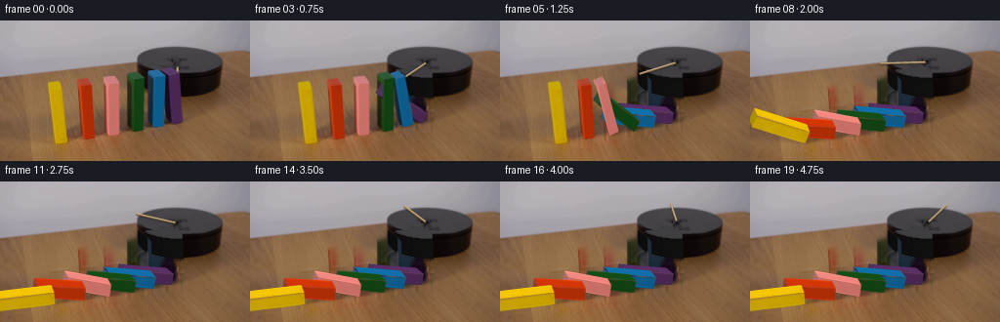
视觉工具实际返回图片 5
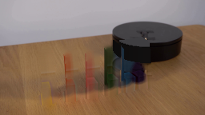
视觉工具实际返回图片 6
视觉工具实际返回图片 7
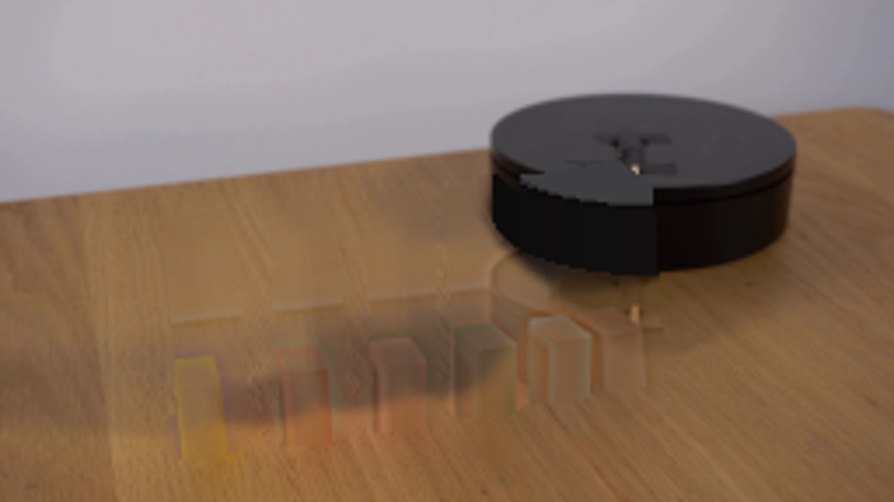
视觉工具实际返回图片 8
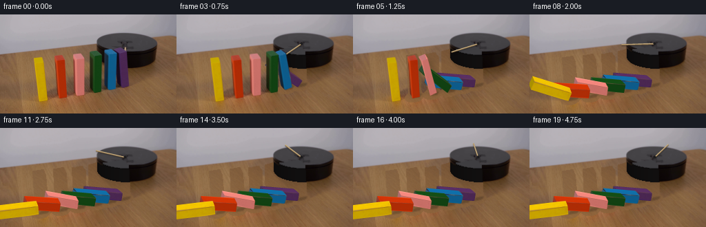
视觉工具实际返回图片 9
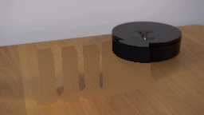
视觉工具实际返回图片 10
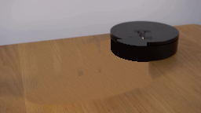
视觉工具实际返回图片 11
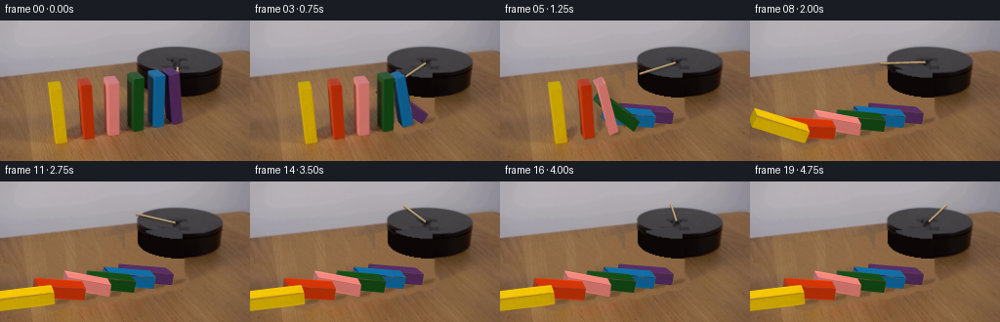
视觉工具实际返回图片 12
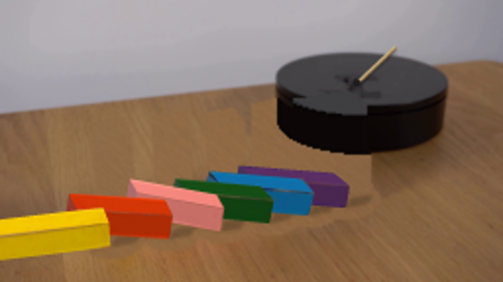
视觉工具实际返回图片 13
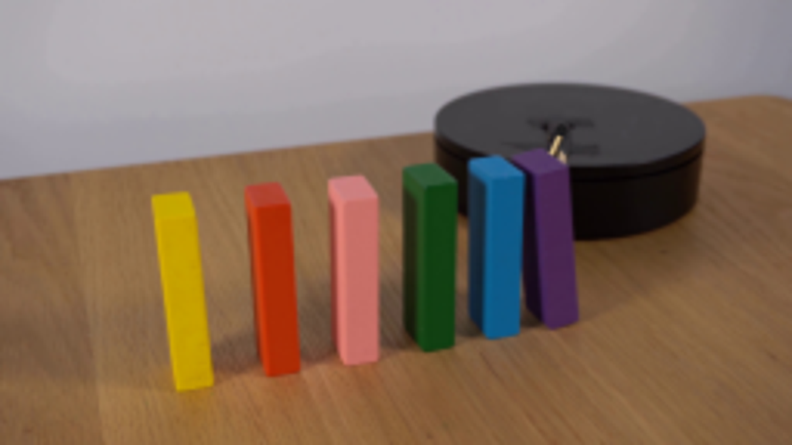
视觉工具实际返回图片 14
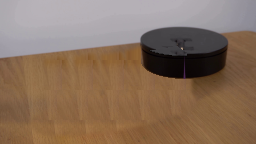
视觉工具实际返回图片 15
保存候选 9 份；完成命令 18 次；可验证图片返回 15 张。原始 API 响应与完整日志保留在本地。